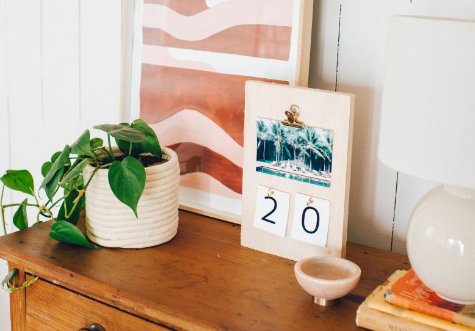

Make this easy DIY photo flip calendar
It’s that time of year again…. Time when your home or office might benefit from a *little* bit of organisation.
I for one need to give my home office a complete makeover, it’s actually a bit of a disgrace…. It’s become that one ‘scary’ room of the house where all your boxes and random stuff gets stored. Do you have one of these rooms, or is it just me?! While a full overhaul is terrifyingly necessary, I decided to start small with this little photo flip calendar.I’ve been working with Canon for the last year, bringing photos into different parts of the house . Well now it’s the office’s turn! This calendar is sooo easy to make.
Materials
- A Printer
- Photo paper
- Plywood cut to A4 paper size
- 1 binder clip
- 2 screw in wall hooks
- Glue
- A hole punch
Lets Get Started!
1. Start by printing a landscape photo.
2. Place it at the top of your wood, centred where
you would like it to hang.
3. Mark the top so you know where to glue the clip.
4. Glue your clip in place.
5. Print and cut out your flip numbers.
6. Punch a hole in the top of your numbers.
7. Lay your numbers on the wood, and mark inside the holes
where your hooks need to go.
8. Screw in your hooks. We did this by hand but you may need
to use a drill if the wood is very hard.
9. Finally, add your numbers and photo.